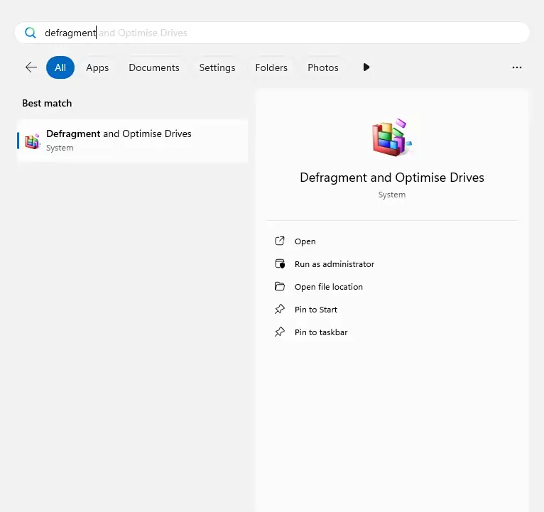

Optimising Windows 10/ 11 Guide
Has your computer gotten slower and more unstable? Errors should appear once in a blue moon and not every day.
Introduction
Have you noticed that your computer has started to get slower and more unstable, you might be thinking that you are getting ready for a new one if this is the case, however this perceived slowness and glitchy behaviour is likely to be caused by system corruption and old temporary files that are cluttering up your computer system.
In this article I will discuss the things you can do to optimise the performance of your PC and make it like new again.
How do I remove junk and corruption?
Over time your computer will culminate junk and corrupt files, this is normal and is why computers slow down over time, there are four things that you can do to fix this:
- Clear your browser history and browser cache.
- Run the Hackboto Tech Tips Windows Optimiser.
- Defragment your Hard Drive.
- Repair Windows 11.
- Clean-install Windows 10 /11.
I advise that you backup your computer before proceeding, you can learn about backing up your computer and your files in my "Backing Up Windows 10/ 11" guide, link below.
View Backing Up Windows 10/ 11 guideHow do I clear my Browser Cache?
Clearing your browser cache is really easy, it might be slightly different depending on the browser you use, this guide will walk you through Microsoft Edge, however Google Crome is very similar as they are built on the same technology.
The first step is to open your web browser, you will see three dots in your tool bar, you need to click on these.
The next thing you need to click on is the settings button at the bottom, you might need to scroll down for this to be visible.
You should now see a screen that looks something like this, on Microsoft Edge you need to click on Privacy, search, and services, this might be called something else if you are using a different browser, for example on Firefox it is called Privacy & Security.
You now need to scroll down until you see the Clear browsing data section, you then need to click on Choose what to clear.
You are now at the stage where you delete your browser history and browser cache, make sure you select "All time" for the time range, also make sure that passwords are deselected as this will delete all your saved passwords if you select this. I recommend selecting the options as they are in the image above to effectively clear the junk from your browser.
Please take notice that this will delete all of your browser history, sign you out from websites, etc, your settings will remain as this is only clearing the browsing data.
You will now find that your computer feels a bit snappier when you are browsing the internet.
Hackboto Tech Tips: Windows Optimiser

The Hackboto Tech Tips Windows Optimiser program has been specially designed to help restore and improve the stability of your Windows 10/ 11 based computer, it checks for system level corruption and repairs it, and it removes junk from your computer and user account.
Our Windows Optimiser tool is designed for those who do not have a high level of technical knowledge and want to improve the stability and performance of their computer system at a touch of a button.
You can learn more about the Hackboto Tech Tips Windows Optimiser program clicking on the link below.
View: Windows Optimiser download pageBefore you run the program on your computer system, I would advise you to back up your system first so that you can restore it back to its previous state in the event that anything goes wrong.
View Backing Up Windows 10/ 11 guideHow to defragment your Hard Disk Drive.
If you have an older PC that originally came with Windows 10 or older, you might have a mechanical boot drive, this means that your PC might slow down after a while if it is not defragmented, if you have an HDD boot drive you will see a huge improvement in performance after defragmenting your drive.
In Windows Vista, 7, 8, 10, and Windows 11 to launch the defragment utility you just need to launch your start menu and type "defragment”, and you will see the utility as pictured.
You should now see a screen that looks like this one, what you need to do is make sure that advanced view is ticked, click on the top drive, then click the button where it says Defragment or Optimise, you will need to repeat this process for all of the Drives that you see working you way from the top to the bottom.
You just need to wait for the Current status to change to OK on all the drives, close the utility once you have successfully defragmented/ optimised your storage drives.
If your media type is reported as a Hard Disk Drive (HDD), you might want to consider upgrading to a Solid-State Drive (SSD) as these are much (faster, cheaper, durable) better than HDDs, you can buy them for as little as £20 pound and they will make your computer run faster than when it was new!
How to Repair Windows 11
Warning: You should backup your PC and files before you attempt to repair Windows 11.
You can do an in-place repair on Windows 11 (Not available on Windows 10 and older) using the settings App, you just need to navigate to the "Recovery" settings page, alternatively you can use the link below.
Open Windows RecoveryAfter you have navigated to the "Recovery" settings page, you need to click on the "Reinstall Now" button.
You should now see a popup saying, "We'll repair components and system files", you need to click "OK" to accept the terms presented.
You should now see the "Windows Update" settings page, you will see a repair version of Windows downloading here, you need to wait for it to download and install, keep your PC turned on and plugged in during this process as it will take a while.
Once it has finished, you will be notified to restart your PC, again this process will take a while so keep it plugged in and turned on, after it has finished repairing, I advise you to run the Windows Optimiser again.
Clean installing Windows 10/ 11
Warning: Clean installing will wipe your computer clean, you must backup all your files before even considering this option as they will be deleted off your machine.
Clean installing Windows should always be a last resort and should only be done if your PC is still slow and glitchy after trying everything else on this page.
If you need to clean-install Windows 10/ 11 for any reason, you can follow these guides on the rTS Wiki:
Guide: Installing Windows 10Guide: Installing Windows 11
Page Updated: 24/03/2025
Page Author: Hackboto